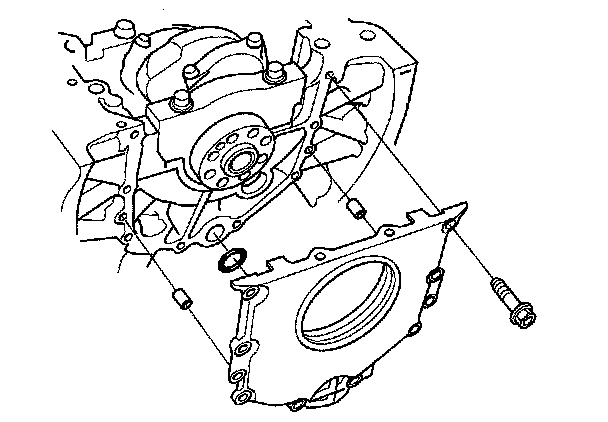
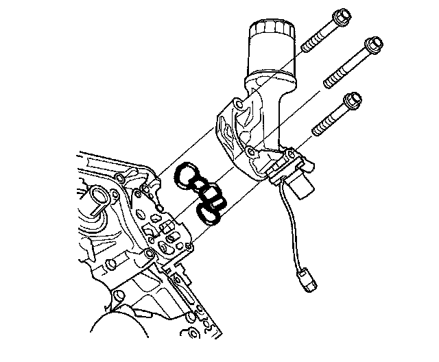
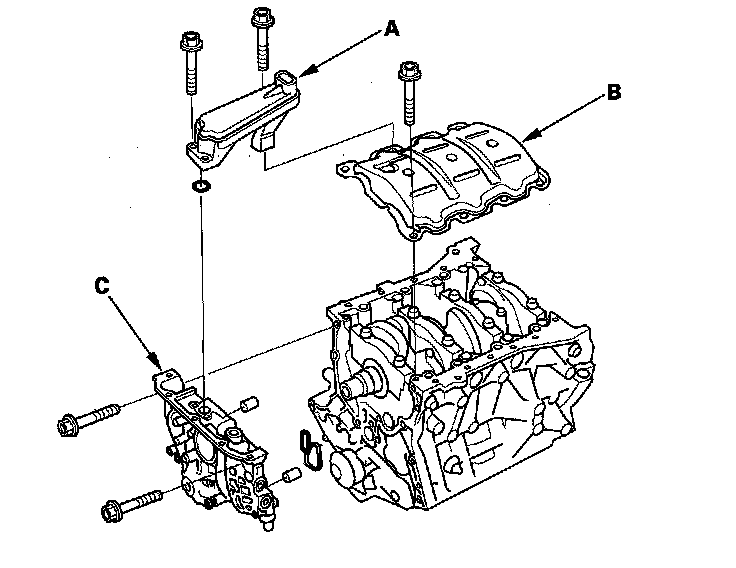
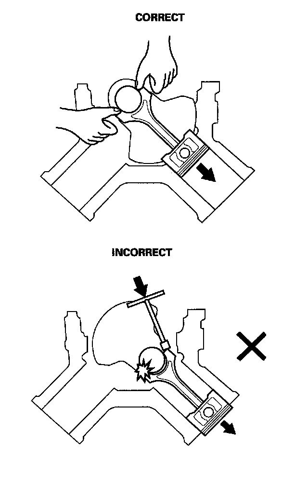
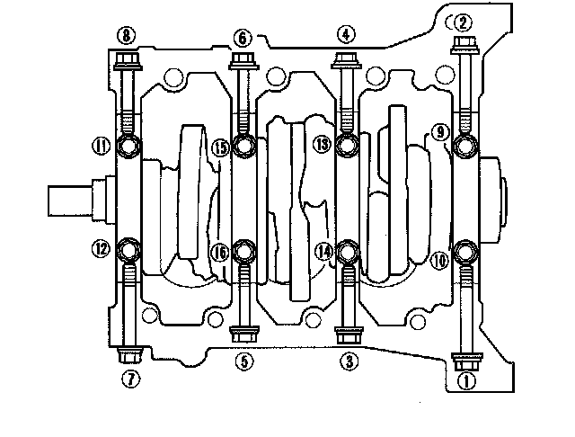
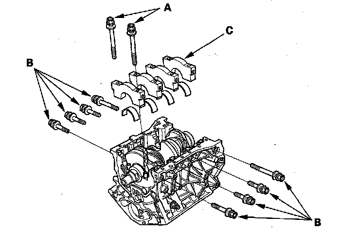
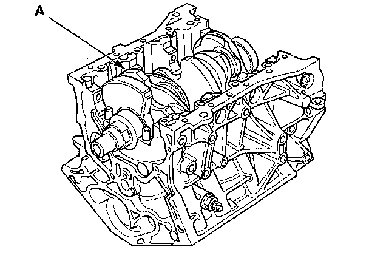

Crankshaft and Piston Removal
Crankshaft and Piston Removal1. Remove the engine assembly.
2. Remove the transmission.
3. Remove the drive plate.
4. Remove the cylinder heads.
5. Remove the crankshaft position (CKP) sensor.
6. Remove the timing belt drive pulley from the crankshaft.
7. Remove the oil pan.
8. Remove the engine block and cover.

9. Remove the rocker arm oil control solenoid/oil filter assembly.

10. Remove the oil screen (A), baffle plate (B), and oil pump (C).

11. Remove the connecting rod caps after setting the crank pin at bottom dead center (BDC) for each cylinder. Remove the piston/connecting rod assembly by pushing on the connecting rod. Take care not to damage the crank pin or cylinder with the connecting rod.

12. Remove the bearing from the cap. Keep all caps/bearings in order.
13. Remove the upper bearing halves from the connecting rods, and set them aside with their respective caps.
14. After removing a piston/connecting rod assembly, reinstall the cap on the rod.
15. To avoid mix-up during reassembly, mark each piston/connecting rod assembly with its cylinder number.
16. Loosen the bearing cap bolts and bearing cap side bolts in sequence 1/3 turn at a time; repeat the sequence until all bolts are loosened.

17. Remove the bearing cap bolts (A) and bearing cap side bolts (B), then remove the bearing cap (C).

18. Lift the crankshaft (A) out of the engine block, being careful not to damage the journals.

19. Reinstall the main caps and bearings on the engine block in the proper order.